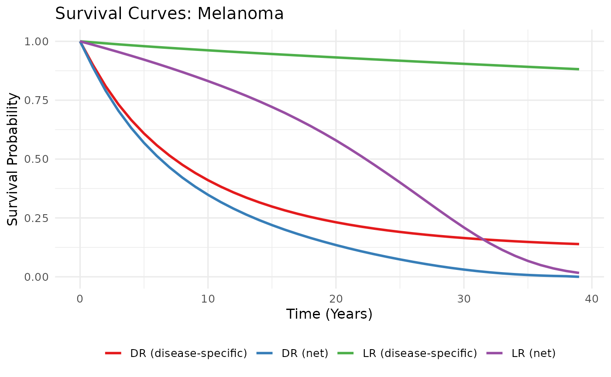

Plot Blended Survival Curves for LR and DR Populations
Source:R/plot_survival.R
plot_survival_curves.RdProduces a ggplot comparing up to four survival
curves: disease-specific blended LR, disease-specific blended DR, net LR,
and net DR. Designed to give a quick visual QC check after running
blend_survival and make_background_surv.
Usage
plot_survival_curves(
S_blend_L,
S_blend_D,
U_L = NULL,
U_D = NULL,
tumour = "Tumour",
time_unit = "Years"
)Arguments
- S_blend_L
A two-column tibble (
time,surv) — blended disease-specific LR survival fromblend_survival.- S_blend_D
A two-column tibble (
time,surv) — blended disease-specific DR survival.- U_L
A two-column tibble (
time,surv) — net LR survival (disease-specific × background). PassNULLto omit.- U_D
A two-column tibble (
time,surv) — net DR survival. PassNULLto omit.- tumour
Character scalar used in the plot title (default
"Tumour").- time_unit
Character scalar for the x-axis label (default
"Years").
Examples
# \donttest{
data(lifetable_seer)
t <- 0:5
s_lr <- c(1, 0.9959, 0.9886, 0.9831, 0.9783, 0.9754)
s_dr <- c(1, 0.5491, 0.4396, 0.3945, 0.3630, 0.3410)
grid <- seq(0, 39, by = 1)
ipd_L <- prep_ipd(t, s_lr)
ipd_D <- prep_ipd(t, s_dr)
mods_L <- fit_models(ipd_L[-1, ])
mods_D <- fit_models(ipd_D[-1, ])
wts_L <- compute_weights(extract_ic(mods_L, "AIC"), 3, "AIC")
wts_D <- compute_weights(extract_ic(mods_D, "AIC"), 3, "AIC")
SL <- blend_survival(mods_L, wts_L, grid)
#> New names:
#> • `surv` -> `surv...1`
#> • `surv` -> `surv...2`
#> • `surv` -> `surv...3`
SD <- blend_survival(mods_D, wts_D, grid)
#> New names:
#> • `surv` -> `surv...1`
#> • `surv` -> `surv...2`
#> • `surv` -> `surv...3`
lt <- lifetable_seer
lt$btrate_LR <- lt$Males * 0.58 + lt$Females * 0.42
lt$btrate_DR <- lt$Males * 0.69 + lt$Females * 0.31
BL <- make_background_surv(lt, 61, "btrate_LR", grid)
BD <- make_background_surv(lt, 62, "btrate_DR", grid)
UL <- dplyr::mutate(
dplyr::left_join(SL, BL, by = "time"),
surv = surv.x * surv.y
)[, c("time", "surv")]
UD <- dplyr::mutate(
dplyr::left_join(SD, BD, by = "time"),
surv = surv.x * surv.y
)[, c("time", "surv")]
p <- plot_survival_curves(SL, SD, UL, UD, tumour = "Melanoma")
p

# }